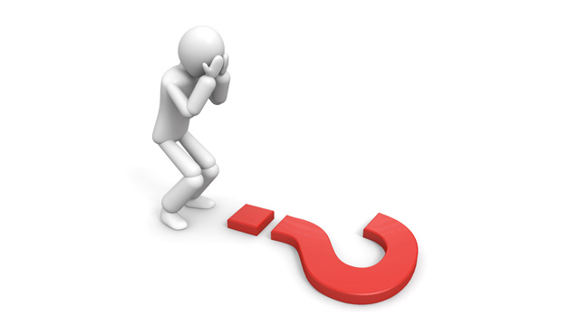

先日インターネットを徘徊していると、蚊が人間を刺すメカニズムについて研究している高校生の記事を見つけました。どうやらNHKの番組で取りあげられたらしく、かなりの評判です。思い返せば夏前にも、カナダの高校生がマヤ文明の失われた遺跡を発見したとの報道があり、一部で盛り上がっていました（こちらは専門家からかなり批判があり、結論自体は誤りである可能性が高いそうですが…）。
どちらのニュースも、その研究内容自体は「すごいな」と感嘆するばかりです。ただ、私が興味を持ったのはどちらかというと「このような子供はどんな教育をすれば育つのか」というところ。
蚊の研究を見てみると、仮説を立て、それを証明するために状況の場合分けを行い、実証するというプロセスをしっかりたどっています。もちろん、このようなやり方を知っていることがスゴイと言うわけではありません。実験のやり方ということであれば、それこそ小学校理科の教科書にも載っていますし、高校入試でも実験についての問題は頻出します。もっと言えば、定期テストにまで出題されるわけですから、むしろ知っていて当たり前です。にもかかわらず、このような研究を生徒が行うことは稀です。それはなぜでしょう。
理由は「知識」よりも、より根源的なところにありそうです。実験の手法、もっと拡大すれば科学的手法というものをただの「面倒な決まり事」として暗記するのか、必要性と実感を伴って再発見するのか、どちらも同じ知識を手に入れますが、その間には大きな差があります。道具を手に入れることよりもむしろ、その道具の使い方を理解しているかが重要なのです。他人に意味も無く道具を手渡されただけでは、その道具は価値を持ちません。渡された側はその意味も用途もよく分からないのですから。
では、必要性と実感を伴って再発見するためには、どうすればよいのか。たぶんその答えは「疑問」にあるはずです。慣れ親しんだ周囲の世界に引っかかりを持つ感性が疑問を生みます。私たちは普通、身の回りのものに特段疑問を持ちません。少し文系的な例になりますが、なぜ学校の生徒集会では生徒はみな静かに立って（あるいは座って）先生の話を聞いているのでしょう。この状況は小学一年生から「当たり前のこと」として皆が体験してきたことですが、よくよく考えてみると不思議です。そもそもなんで黙っている必要があるのか、なんでじっとしている必要があるのか。この問いにはすぐに「話者の声を届けやすくするため」「話に集中させるため」という答えが出てくるでしょう。しかし、ここからさらに疑問が生まれてきます。声の通りやすさはそうとしても、じっと立っていることが本当に集中を生み出すのか。よりよい方法はないのか。さらに言えば、改善の余地がまだまだあるにも関わらず、なぜ同じやり方が何十年も踏襲されているのかも疑問でしょう。
人は身の回りの世界に用途を与えることで安心します。用途も意味も分からない「謎の物体」など、恐怖を誘うだけです。しかし、このような「意味のラベル」を勇気を持ってはぎ取ってみると、そこには「謎」が現れます。そして、この謎について考える中で新しい発想が生まれるのです。
実は、このような世界の見方は、既存の英数国理社という教科では教えてくれません。これを教えてくれるのは「哲学」です。西洋・東洋を問わず、哲学は「ものの“謎”」に特化した学問です。哲学の歴史は人類が何を“謎”としてきたかの歴史であるといっても過言ではありません。哲学を学ぶとは、“謎の発見法”を学ぶということ。ですから、哲学を学んだ人間にとって世界は謎だらけです。そして、謎さえ見つけられれば、それを考察する手段は小学生のときから習うわけですから、必ず手に入ります。
「うちの子もTVに取りあげられるレベルの研究をするような独創的な人間に育てたいな。」
そう思われる保護者の皆さん。よろしければ是非本屋に並べられた哲学の解説書を手に取ってみてください。そして、お子さんと一緒に身の回りの謎を探してみてください。そうやって「謎の見つけ方」を学んだ子供であれば、特殊な塾に行ったり教材をやらなくても、小中学校の授業で十分ですよ。